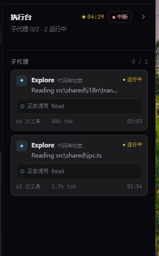

把「现在跑到哪了」做得更清楚：计时器成为锚点，子代理卡片去掉嵌套方框， 运行 / 完成 / 失败用 色条 + 胶囊 双重编码；任务进度回到任务区，底部固定本轮统计。

22px 等宽计时 + 运行胶囊。中断降为右侧描边按钮，不再和标题、状态挤在同一行。
左侧 2px 色条 + 右上角胶囊：运行珊瑚、完成绿、失败红、停止灰，扫一眼就能分开。
卡片里不再套一层活动框。工具名做成小 chip，活动描述单行截断，旋转环只提示「还在动」。
进度条段数和任务一一对应；进行中的任务用珊瑚底 + 脉冲点，完成用绿勾 + 删除线。
步数 / 增删行数固定在底部，长列表滚动时也有落点；浅色主题卡片浮白、状态色同步加深。
面板铺满窗口右侧，头部和会话头 + 标签栏对齐，底部统计贴住窗口底边。
窗口窄于 1280px 时浮到正文上方，随时可以收起；宽度不变，卡片不重排。
头部右侧的箭头收起面板，会话头里的「执行台」chip 重新打开 —— 沿用现有交互。
会话头右侧的 chip 保留运行计数，点一下重新展开。